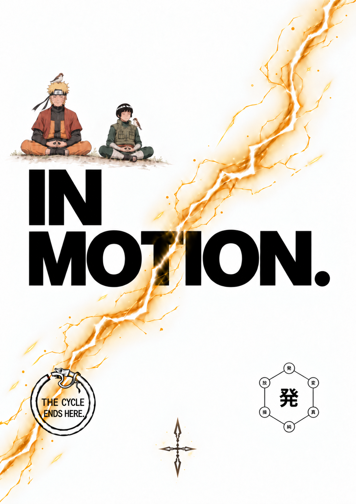
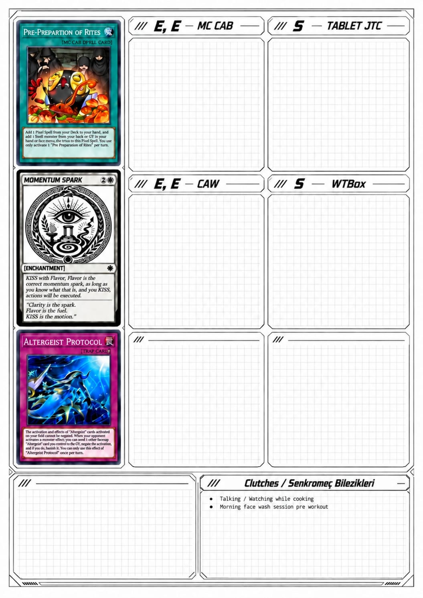
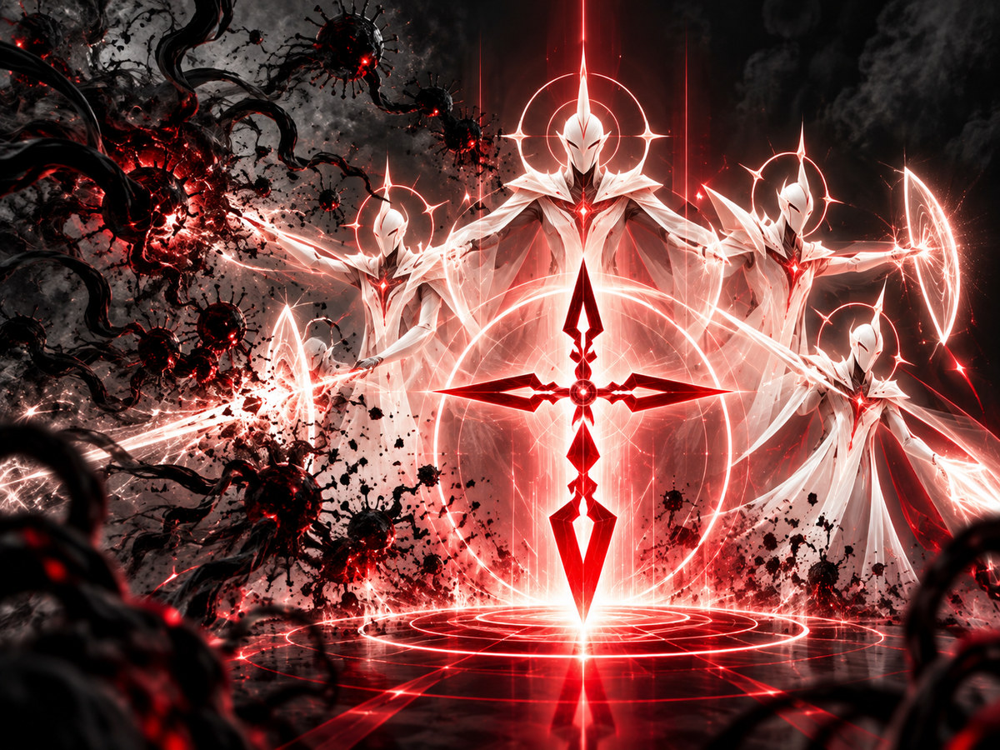
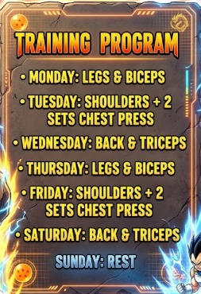

IN MOTION / TODAY MATTERS

IN MOTION / TIME ARCHITECTURE
GÜNÜN AKIŞI ✦
TODAYYOUR DAY, IN MOTIONPlan your hours. The current hour stays illuminated.



AI is only used after you configure a secure endpoint. Your OpenAI API key belongs on the server, never in this APK.
Profile and conversations remain saved on your phone. Selected information is sent to your private GPT connection only when enabled. Daily notes have a separate opt-in toggle inside ASK IN MOTION.
Your Gallery, daily journals and Guardian records remain on this device unless you specifically enable sharing relevant notes in ASK IN MOTION. Voice dictation uses your Android recognition service and may be processed online depending on your device settings. AI requests through your private Worker incur separate API charges.

DISRUPTION DETECTED · OVERRIDE REQUIRED
Describe below what triggered The Disruption. What thoughts, doubts, or internal negotiations are interfering with your ability to take action?
Once completed, copy the entire text box and paste it into ChatGPT with the following instruction:
"Based on the situation described above, create a personalized Reassurer that addresses my concerns, neutralizes the internal negotiation, and helps me return to decisive action."
Write at least one line to override. Your notes are stored on this device.
The stopwatch keeps its elapsed time even when this panel is closed or the app is reopened.
The work you put in. The days you lived. The evidence you choose to keep.
Photos and videos stay in private app storage; they are not sent to AI. Keep your original files as a backup. Videos can take significant phone storage.

Tap a muscle group to open its editable image and notes. CHANGE IMAGE below replaces the main program artwork.
Search your daily notes, completed tasks, Gallery history and Guardian override log. Everything stays on this device.